・呉の戦災
２．主な空襲
・広海軍工廠・第11海軍航空廠
恐怖の白昼爆撃 (1945年5月5日)
ーー広海軍工廠･第11海軍航空廠が壊滅ーー
1944年(昭和19)11月から開始された、マリアナ基地のB29による爆撃は、軍需工場や大都市に大きな犠牲と損害をもたらしてきましたが、ついに、呉が初めてB29による爆撃を受ける日がやってきました。
１、空襲前の広地区
（1945（昭和20）年4月12日米軍撮影）米国立公文書館所蔵
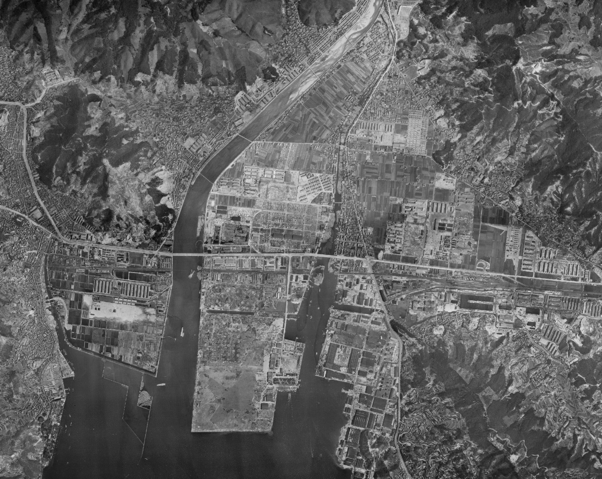広地区全図
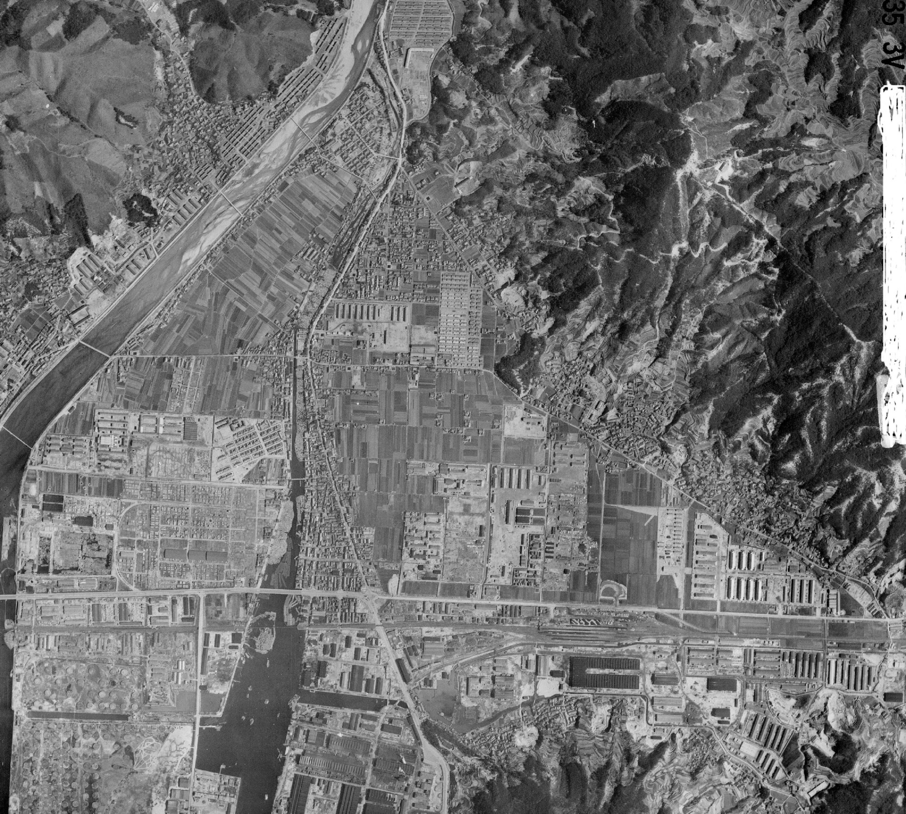広地区中心部
 広湾地区・呉海軍飛行場と第11海軍航空廠
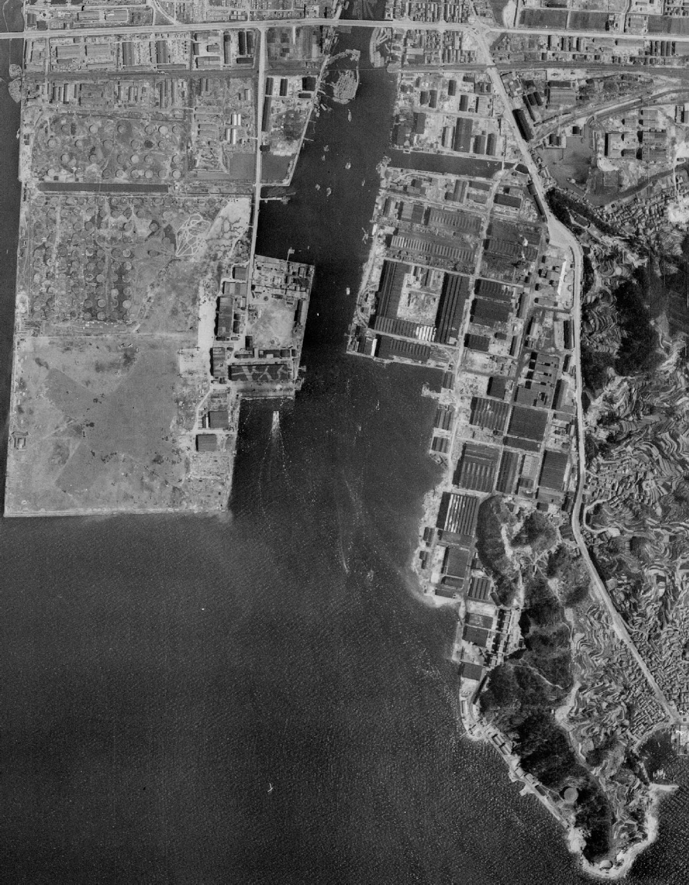第11海軍航空廠
広湾地区・呉海軍飛行場と第11海軍航空廠
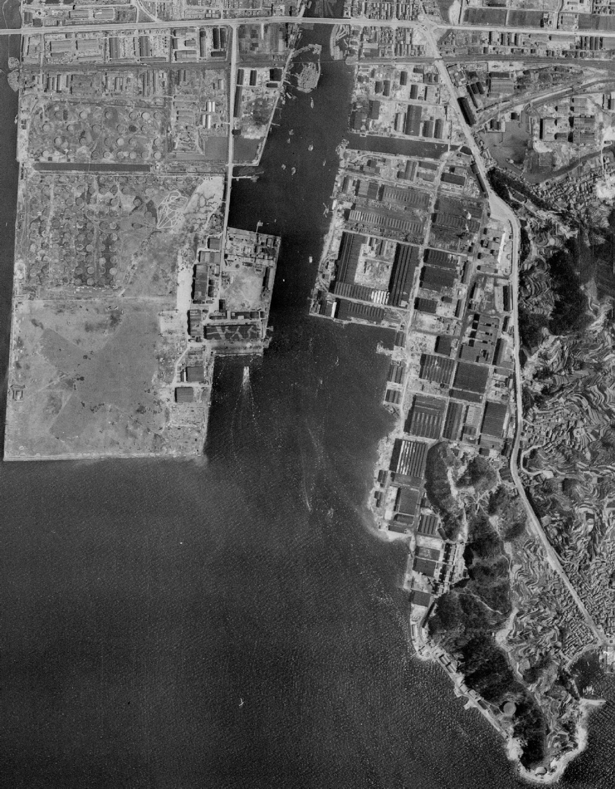第11海軍航空廠
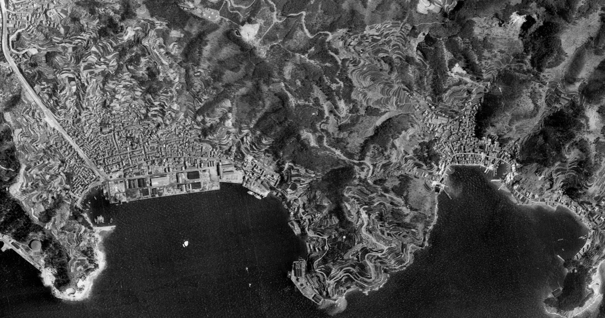
長浜・小坪地区
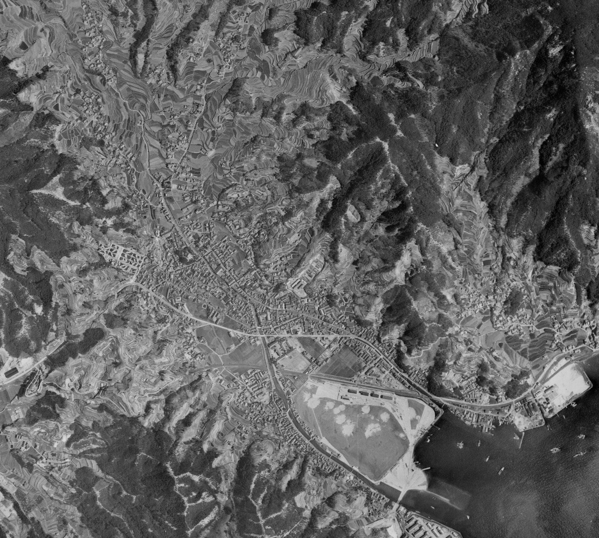仁方地区
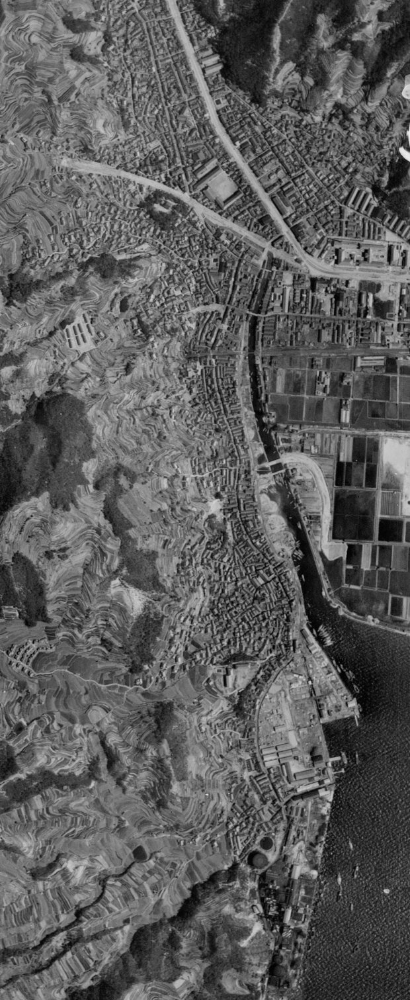阿賀・延崎地区
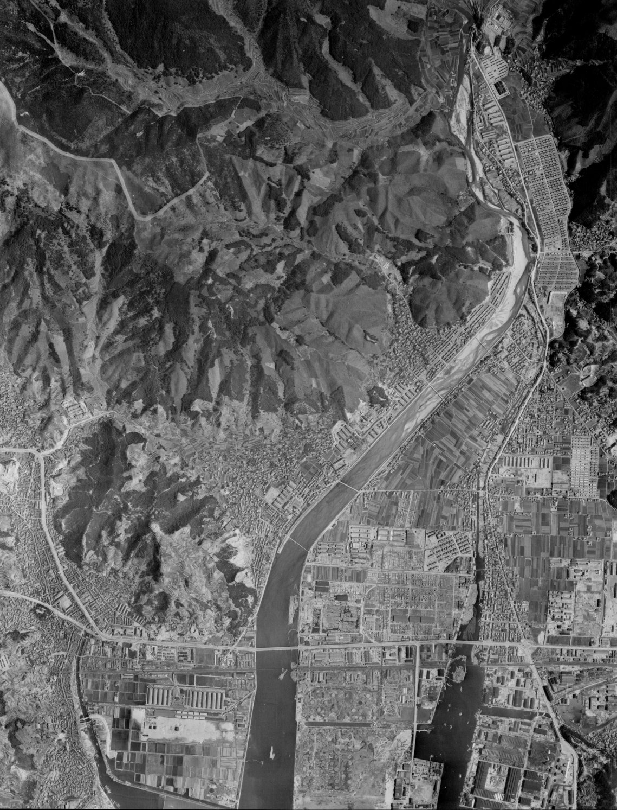
阿賀・豊栄・横路・古新開・塩焼・町田・徳丸
２、空襲を受けた広地区
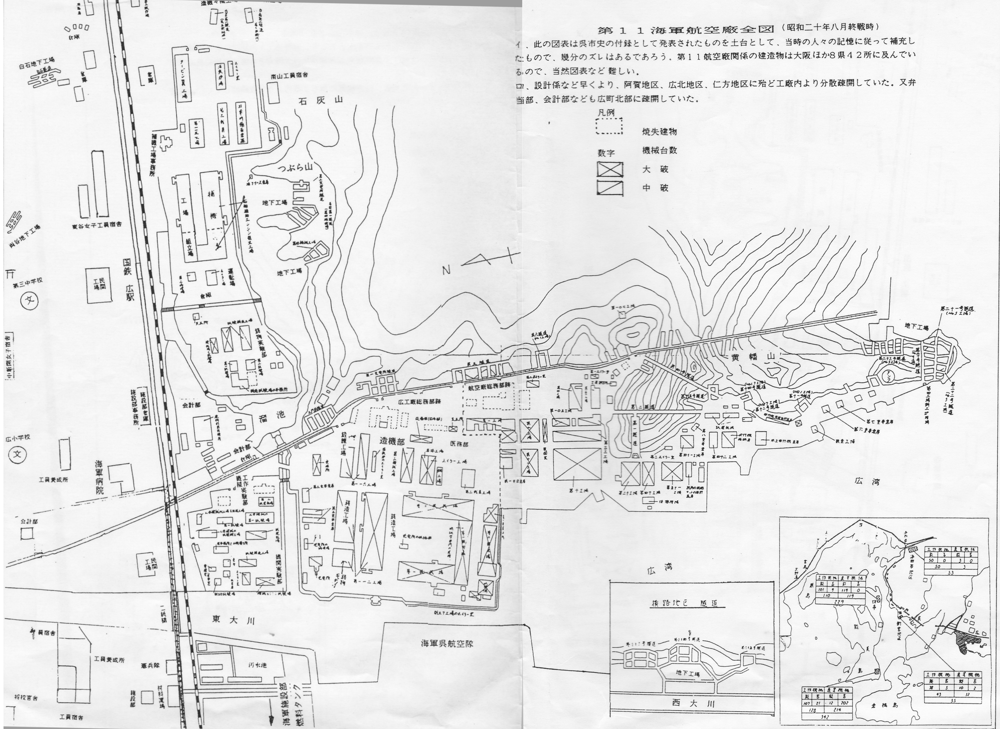
広海軍工廠・第1航空廠などの分布地図
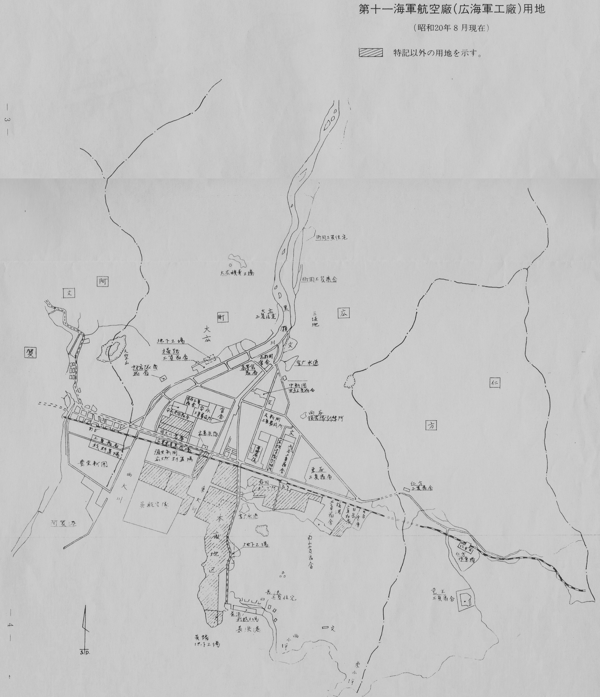
広海軍工廠・第1航空廠などの用地所在地図
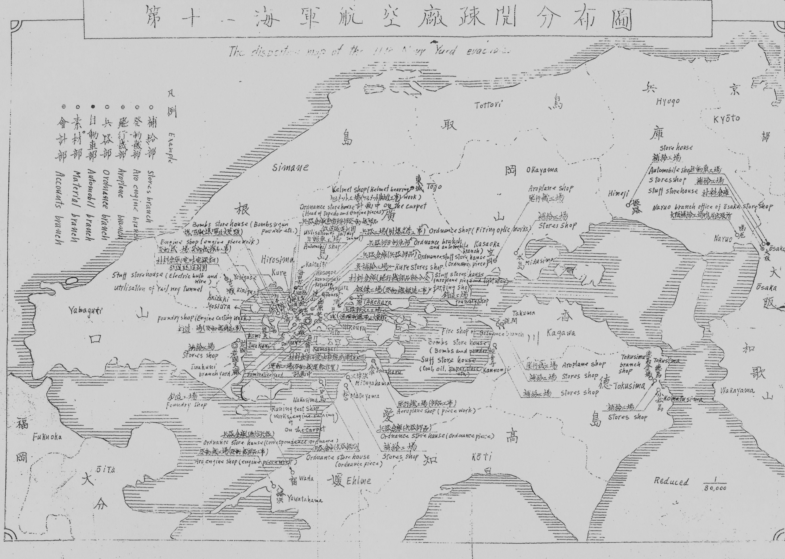
第1航空廠の疎開先分布図
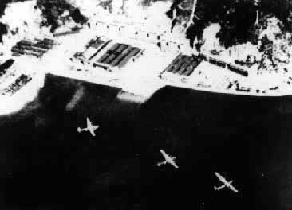
空襲中のB29
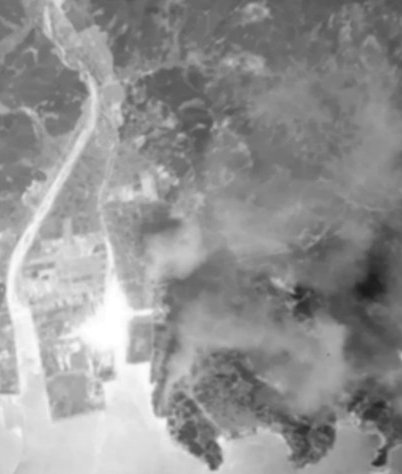
爆撃を受ける第11海軍航空廠
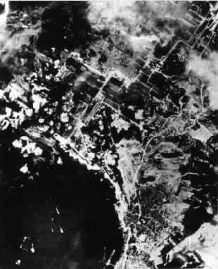
爆撃を受ける第11海軍航空廠
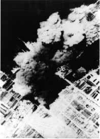
爆撃を受ける第11海軍航空廠
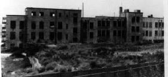
廃墟となった第11海軍航空廠本部
ねらわれたのは、広海軍工廠･第11海軍航空廠です。この軍需工場は日本海軍の航空機エンジン生産の拠点で、この時は勤労動員の学生を含む約5万の人たちが働いていました。
1945年(昭和20)5月5日午前10時40分から午前11時11分まで148機のB29が広の上空を覆いつくしました。投下された爆弾の量は合計722発(578トン)で、工場施設は壊滅的打撃を受けました。広島県警察史や呉地方復員部の資料によれば、犠牲者の数は少なくとも140人以上となっています。
鉄壁を誇っていたはずの対空砲火群は、この空襲にほとんど無力でした。軍側はこの実態を「損害は軽微」と発表して、さらに大規模な被災に市民を追い込んでいくことになるのです。
《参照》
「広地区戦跡遺跡見学」
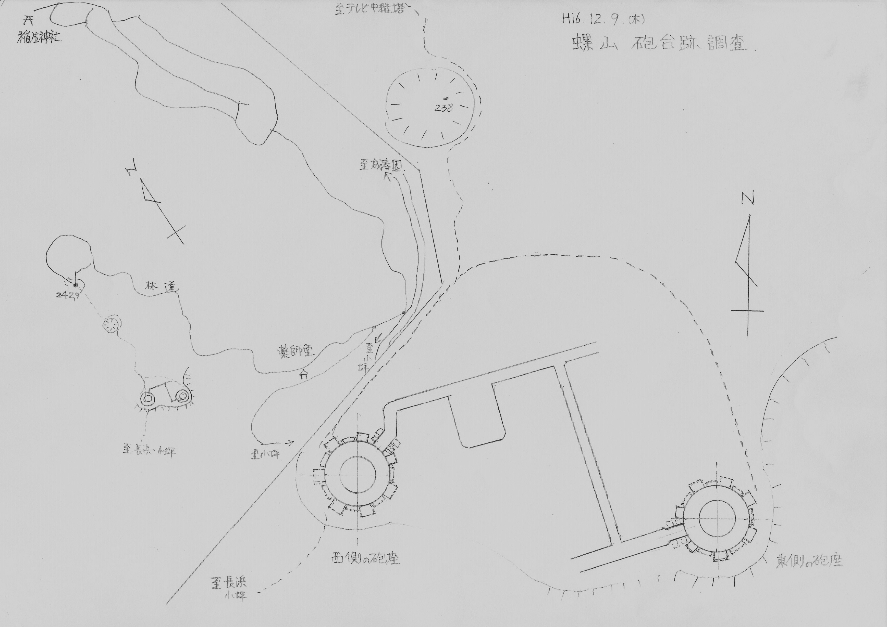
広地区東側の螺山砲台図
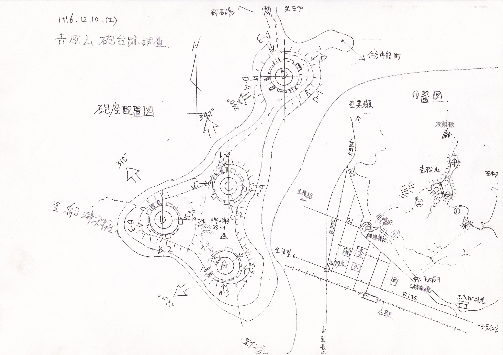
広地区北側の吉松山砲台図
米軍『戦術作戦任務報告』にみる爆撃データ
●第73航空回の111機のB29が高度約5730メートル(1万8900フィート)から、1トン爆弾434発(434トン)を投下した。
●第58航空回の37機のB29が高度約5490メートル(1万8000フィート)から、500キロ爆弾228発(144トン)を投下した。
●合計して、148機のB29が爆弾を722発(578トン)投下した。
爆撃効果の判定は以下のとおりである。
･広海軍航空機工場を有視界攻撃で屋根面積の72%、7万2490平方メートル に損害を与えた。
・広海軍エンジン・タービン工場
･レーダー攻撃で屋根面積の51.5%、11万6355平方メートルに損害を与えた。
トップページに戻る